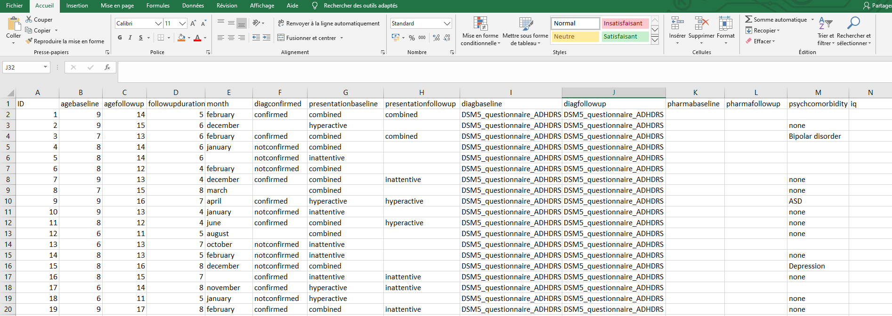

2 Formatting your dataset (~30mn)
In order to run the analyses, you will need to label your columns and values as described below. This operation should be done using the software which was used to compile the data (typically Excel, Open Office, or another spreadsheet software). The examples below are given for Excel users but they could be applied to any other software.
2.1 Raw dataset
Open your dataset with the spreadsheet software you use. For instance:
2.2 Select appropriate columns
Only 12 columns will be required for the analysis. Here is the list:
- A column containing the participant identifiers
- A column containing the age of participants at baseline
- A column containing the age of participants at follow up
- A column containing the follow up duration
- A column containing the month of birth of the participants (If the birthdate of the participant is stored under a format like this (e.g., “07-11-1993” or “07/11/1993”), you can let your variable in this format but you have to inform us, so we can adapt the R code
- A column containing the diagnosis status at follow up (confirmed or not confirmed)
- A column containing the subtype / presentation at baseline (hyperactive/inattentive/combined)
- A column containing the subtype / presentation at follow up (hyperactive/inattentive/combined)
- A column containing the diagnosis procedure at baseline
- A column containing the diagnosis procedure at follow up
- A column containing the psychiatric comorbidities of the participants
- A column containing the full-scale IQ score of the participants
2.3 Rename columns
In bold, the name that should be given to the corresponding column
- Participants identifier = ID
- Age at baseline = agebaseline
- Age at Follow up = agefollowup
- Follow up duration = followupduration
- Month of birth = month
- Diagnosis status at follow up = diagconfirmed
- Subtype/presentation at baseline = presentationbaseline
- Subtype/presentation at followup = presentationfollowup
- Diagnosis procedure at baseline = diagbaseline
- Diagnosis procedure at follow up = diagfollowup
- Psychiatric comorbidities (e.g., Autism Spectrum Disorder) = psychcomorbidity
- Full-scale IQ score = iq
2.4 Recode values
We propose two solutions for recoding the values.
In the first one, we propose to run a script on R that will allow us to determine how you have coded your dataset and then recode all the values automatically. If you choose this solution, refer to the point Automatic Recoding below
In the second one, you recode these values yourself. To help you, we have provided details on how to do this. If you choose this solution, please refer to the point Manual Recoding below.
+ Automatic Recoding
In order to recode your dataset automatically, we need to determine how you have coded the values. To do this, please refer directly to point 3 of this document.
+ Manual Recoding
In bold, the name that should be given to the corresponding values
- Participants identifier = no constraint You can identify your participants as you wish
- Age at baseline = Age in years. For example, if a child was 8 years and 2 months at baseline, his “agebaseline” value should be: 8 + 2/12 = 8.17
- Age at Follow up = Age in years. For example, if a child was 11 years and 4 months at follow up, his “agefollowup” value should be: 11 + 4/12 = 11.33
- Follow up duration = Follow up in years. For example, if a child has a follow up duration of 5 years and 8 months, his followupduration value should be: 5 + 8/12 = 5.67
- Month of birth = Standard months names. For example, january, february, march, etc… do not write the first letter in upper case (write january, not January)
- ADHD diagnosis status at follow up = confirmed or notconfirmed. if the diagnosis is confirmed at follow up, the “diagconfirmed” value should be confirmed / if the diagnosis is not confirmed at follow up (i.e., participants do not longer meet ADHD criteria), the “diagconfirmed” value should be notconfirmed
- Presentation at baseline = Name of the subtype/presentation at baseline Should be either hyperactive, inattentive or combined. Again, do not write the first letter in upper case
- Presentation at follow up = Name of the subtype/presentation at follow up Should be either hyperactive, inattentive or combined. Again, do not write the first letter in upper case
- Diagnosis procedure at baseline (Classification used, type of procedure (e.g., questionnaires, semi-structured clinical interview), and name of the tool used) = Name of the classification_type of procedure_name of tool. For example, if a child was diagnosed using the DSM-5 criteria and the ADHDRS questionnaire, his “diagbaseline” value should be DSM5_questionnaire_ADHDRS.
- Diagnosis procedure at follow up (Classification used, type of procedure (e.g., questionnaires, semi-structured clinical interview), and name of the tool used) = Name of the classification_type of procedure_name of tool. For example, if a child was diagnosed using the DSM-5 criteria and the ADHDRS questionnaire, his “diagfollowup” value should be DSM5_questionnaire_ADHDRS.
- Note that it is very important to use a consistent scoring in “diagbaseline” and “diagfollowup”: analyses will compare these two columns to determine whether the same diagnosis procedure has been applied at baseline and follow up. The slightest difference in scoring between these two columns will therefore be interpreted as a difference in the diagnosis procedure used.
- Psychiatric comorbidities (e.g., Autism Spectrum Disorder) = none or no constraint. If a participant has no known psychiatric comorbidity, his “psychcomorbidity” value should be none. Otherwise, name the psychiatric comorbidity (no constraint on the label, but be careful to use consistent labelling across participants: you can identify Autism Spectrum Disorder as Autism Spectrum Disorder, ASD, Autism, etc… but you should use the same label for all participants with Autism).
- Full scale IQ = score of the participants. In the column, simply indicate the standardized score of the participants at the psychometric scale.
Important: if a missing value appears in your dataset (e.g., the diagnosis at follow up has not been collected for one participant), complete all information you have on this participant, but let the cell for his diagnosis status at follow up empty. Do not fill it with some impossible numbers (e.g., -999999)).
If you did not have any information for a particular column (e.g., no participant included in your study have completed an IQ test), write the name of the column but let all the cells of this column empty to indicate that these values are missing.
The formatted dataset shown below gives you an example.
Formatted dataset Once you have finished these modifications, your dataset should look like this one.
In this dataset, some participants have missing values in the month of birth, diagnosis status at follow up and psychiatric comorbidities, and the IQ has not been collected
